Everything on twitch.tv/RetroSaieno
explained: the two currencies, the chat games, the game queue, the backlog,
and every command. Type !features in chat any time to get back here.
!tokens shows your balance, !spend spends it
Everything the stream publishes lives on its own page — bookmark away. The guide below covers how the arcade itself works.
| Page | What's on it |
|---|---|
| Game Library | The full RetroSai library — every platform, every game that can be
requested. Chat shortcut: !gamelist. |
| Live Game Queue | The current request queue, updated while the stream runs — check where your game sits from anywhere. |
| Backlog | Chat's most-wanted pile, ranked by votes, with cover art and played/retired history. See how to vote. |
| Game Shelves | Every viewer's personal collection of games they were here for —
find yours at shelf.html?u=yourname. |
| Achievements | RetroSai's live RetroAchievements record — every unlock, every
mastery, updated as they pop on stream. Chat shortcut: !ra. |
| twitch.tv/RetroSaieno | Where all of this actually happens. |
The stream runs on two separate currencies, and they never mix:
!spend,
!powerup and !duel. !tokens shows
your balance any time.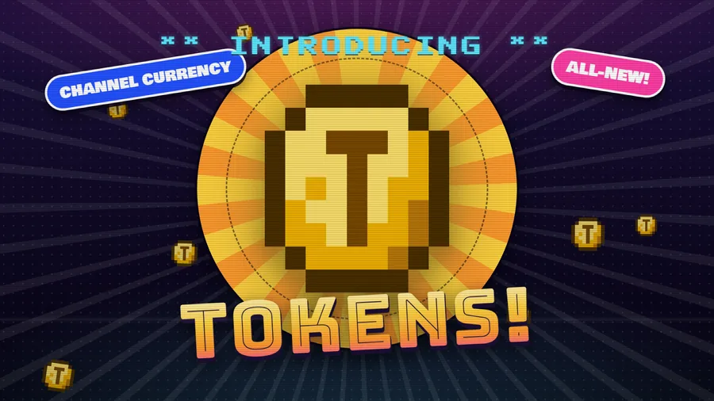
You must be a follower to earn — following is the whole entry fee. Subscribers earn 2× on everything below except check-ins.
!lurk on your way to the couch).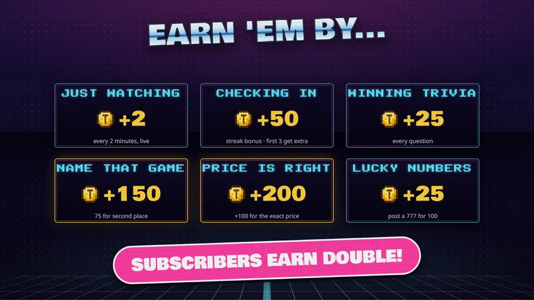
| Command | Cost | What it does |
|---|---|---|
!spend queueskip | 600 | Your most recent game request jumps to the front of the queue (one game per skip — your other requests stay put). It wears a little token badge on the queue overlay. |
!spend backlog <game> | 75 / vote | Adds a game to the backlog — or stacks a
vote on it. Add x3 (up to x10) to buy several votes at
once: !spend backlog Chrono Trigger x3. |
!powerup <amount> | 10+ | Feed the community Power Meter toward the night's goal
(!powerup all throws in whatever it still needs).
!goal shows progress and pops the gauge on screen. |
!duel <user> <amount> | 10–500 | Head-to-head wager — see Duels. |
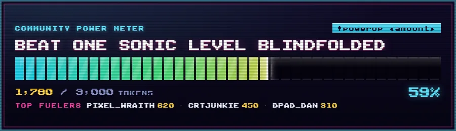
All three run right on the stream overlay. Price Is Right and Name That Game are started by Coin redeems (200 each), so chat decides when a round happens.
!guess 24.99 — with or without the $, both
are fine. Your first guess is the one that counts — a second one is
ignored, so think before you type.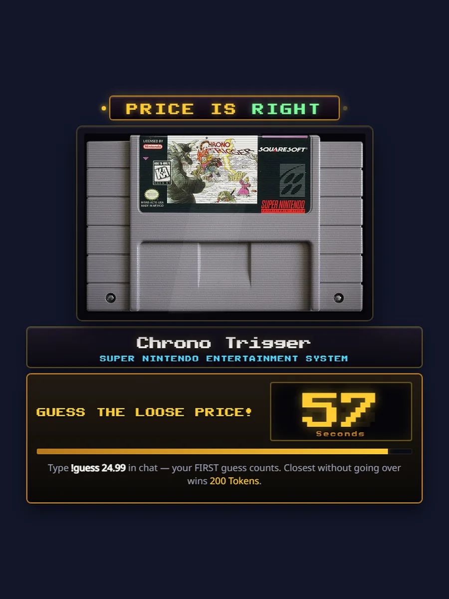
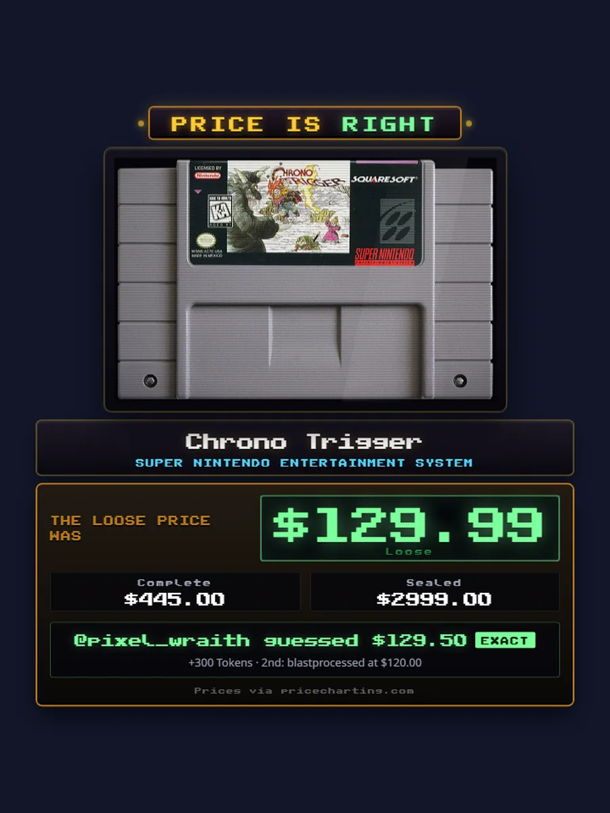
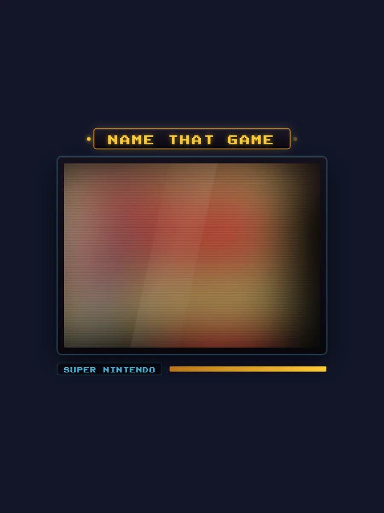
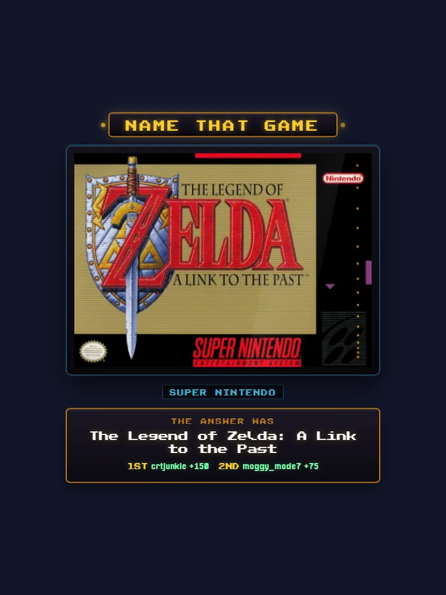
Trivia fires during ad breaks (so there is always something to do): a question about a random game from the library appears on the lower third with a 60-second countdown. Answer in plain chat — every correct answer inside the window earns 25 Tokens.
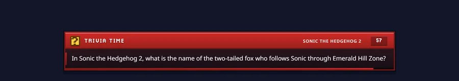
Challenge anyone in chat to a straight 50/50 wager:
!duel <user> <amount> — wagers run
10–500 Tokens.!duelaccept
(or chicken out with !dueldecline).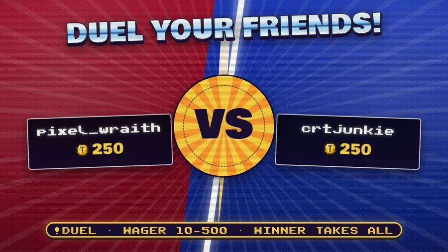
The queue on the right side of the stream is the list of games chat has asked RetroSai to play, in order.
!qcd shows yours).!queue (or !q) reads the
line-up out in chat; the overlay shows it live, and the
live queue page
mirrors it on the web even when you're not watching.!spend queueskip
(600 Tokens) moves your latest request to the
front — marked with a token badge.!888 rolls 1–888. Hit exactly 888
and you're the reigning VIP — your requests outrank everything,
marked with the pink diamond, until someone dethrones you.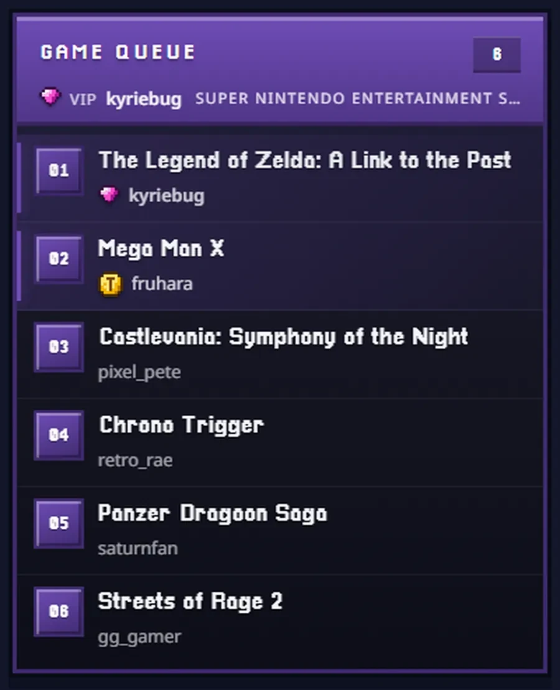
The backlog is chat's wishlist of games for future streams — stuff that deserves a proper session. The most-voted games float to the top, and the whole list lives at the public backlog page.
!spend backlog <game> —
75 Tokens per vote, and you can stack multiple
at once with x2…x10 on the end.!backlogs prints the current top 5 in chat.!backlogedit <correct game>
re-points your most recent vote — free within 15 minutes.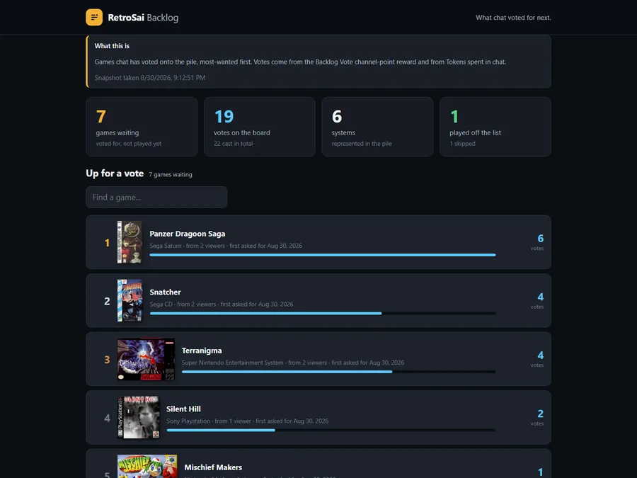
!tokenboard (!tlb) — the seasonal HIGH
SCORES board: top Token earners, arcade style. It also slides the
board onto the stream.!alltime (!atb) — the all-time earners
board.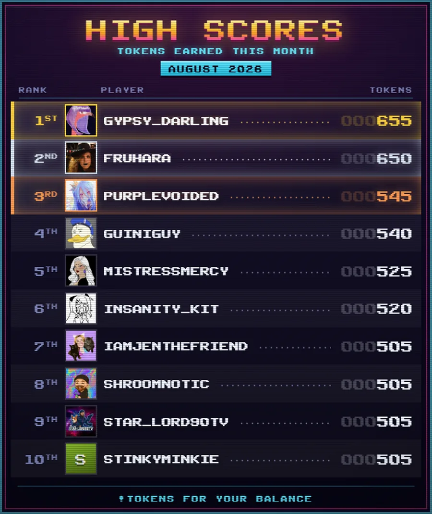
Every game that gets played while you're in chat goes on your
shelf — a permanent, public collection of everything you've witnessed
here. Browse everyone's shelves, or jump straight to
yours at shelf.html?u=yourname (chat shortcut:
!shelf). Shelf pages show your Twitch profile picture, your
collection count, and every box, spine out.
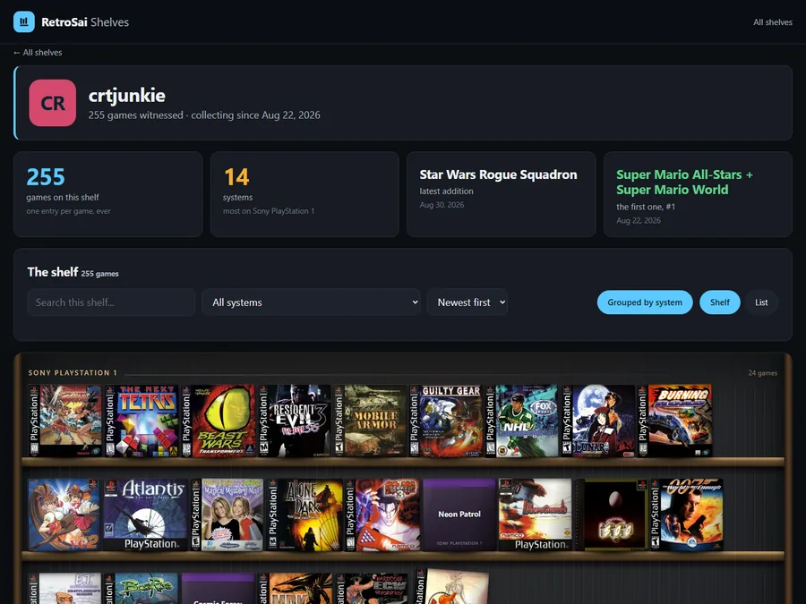
| Redeem | Coins | What happens |
|---|---|---|
| Game Info | 50 | An info card about the current game slides across the lower third. |
| Did You Know? | 50 | A trivia-fact card about the current game. |
| Name That Game | 200 | Starts an NTG round for everyone — you're buying the arcade a game. |
| Price Is Right | 200 | Starts a PIR round (give it ~40s to price the game). |
| Add Game to Backlog | 500 | Type a game → it lands on the backlog with your vote. Unrecognised titles are refunded. |
| Check-In | — | Daily check-in: 50 Tokens × your streak, podium bonus for the first three. |
| Game Queue Request | — | Puts your game in the queue. |
| Spin the Wheel / Wheel of Nostalgia | — | Spins the platform wheel — fate picks what gets played next. |
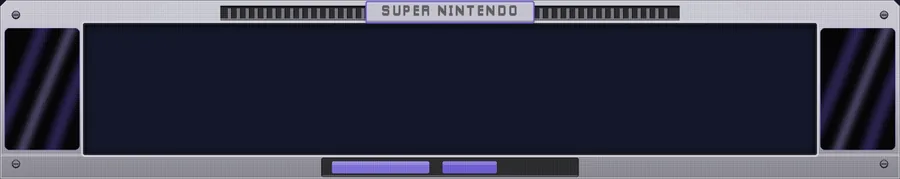
Redeem prices for the marked rows are set in the Twitch dashboard and can shift; the table above lists the fixed ones.
!Guess, !TOKENS and !tokens all work.| Command | What it does |
|---|---|
!tokens (!bal) | Your Token balance. |
!tokenboard (!tlb) | Top 5 Token earners this season + shows the board on stream. |
!alltime (!atb) | Top 5 Token earners ever. |
!spend queueskip | 600 Tokens — your latest request jumps the queue. |
!spend backlog <game> [xN] | 75 Tokens a vote for the backlog. |
!backlogs | The backlog top 5 + page link. |
!backlogedit <game> | Re-point your latest backlog vote (free, 15 min). |
!powerup <amount|all> | Feed the Power Meter (min 10). |
!goal | Meter progress + pops the gauge. |
!duel <user> <amount> | Challenge someone (10–500 Tokens). |
!duelaccept / !dueldecline | Answer a challenge (60s). |
!guess <price> | Your Price Is Right guess — $ optional. |
!shelf | Your game-shelf count + link. |
!queue (!q) | The current game queue. |
!qcd | Your Game Queue Request cooldown. |
!888 | Roll for VIP — exactly 888 takes the crown. |
!checkin | Check-in info / streak status. |
!gamelist (!list) | The full game library site. |
!ra | The live RetroAchievements page. |
!song | What's playing. |
!followage | How long you've followed. |
!font (!fonts) | Pick your personal chat-overlay font. |
!lurk | Announce a respectable lurk. |
!discord (!disc) | The community Discord. |
!retrosai (!rs) | What the RetroSai console actually is. |
!dashboard (!dash) | The RetroSai dashboard theme (free download). |
!features (!guide) | Links this page. |
!help <command> | Details on one command. |
!commands | The quick list in chat. |